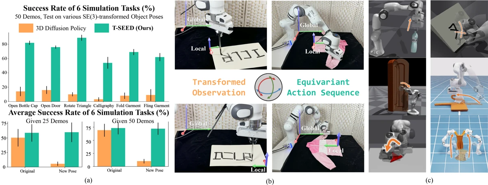
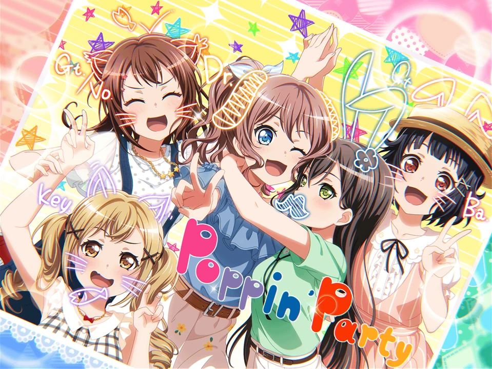
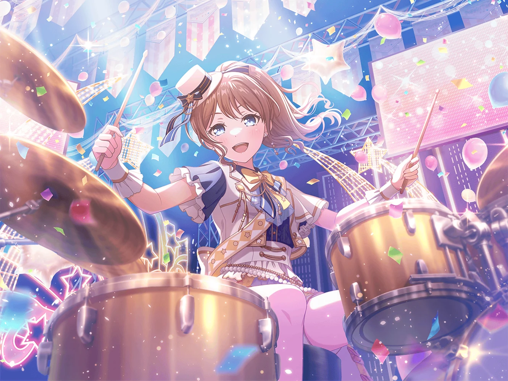

2026 — PRESENT
PhD Student
School of AI for SciencePeking University
Advised by Prof. Weihao Yu · IPP Lab
I am a PhD student at the School of AI for Science, Peking University. I am advised by Prof. Weihao Yu (余伟浩) in IPP Lab.
My research interests are embodied AI, multimodal large language models, and AI agents.

Peking University
Advised by Prof. Weihao Yu · IPP Lab
Peking University

An SE(3)-equivariant diffusion policy for data-efficient robotic manipulation and spatial generalization.
I enjoy Japanese animation and ACG music, especially Poppin’Party and Sāya Yamabuki. I am learning to play the drums.



No matching songs.